Brain-DiT: A Universal Multi-state fMRI Foundation Model with Metadata-Conditioned Pretraining
MICCAI 2026 (🥇 Best Paper Award & Young Scientist Award Shortlist). GitHubPoster

I am Junfeng Xia (夏俊锋), a master's student in Biomedical Engineering at Southern University of Science and Technology, advised by Prof. Quanying Liu (刘泉影). I expect to graduate in June 2027 and am applying for Fall 2027 Ph.D. programs. Before joining SUSTech, I received my B.Eng. in Computer Science and Technology from Zhengzhou University, where I was advised by Prof. Qidong Liu (刘起东).
I also collaborate with Prof. Hongkai Wen (温洪凯) at the University of Warwick and Prof. Jianfeng Feng (冯建峰) at Fudan University on several research projects.
I am especially interested in three questions:
More of our work can be found at fMRI Atlas.

* denotes equal contribution.
Brain-DiT: A Universal Multi-state fMRI Foundation Model with Metadata-Conditioned Pretraining
MICCAI 2026 (🥇 Best Paper Award & Young Scientist Award Shortlist). GitHubPoster
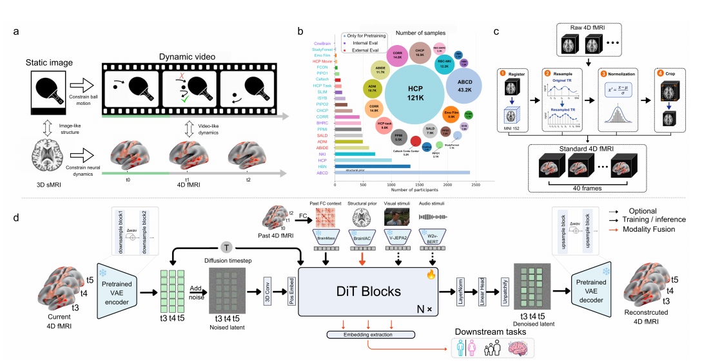
BrainWorld: A Structural-Prior-Conditioned Generative Model for Whole-Brain 4D fMRI Dynamics
NeurIPS, 2026 (Oral, TOP 0.36%). GitHub

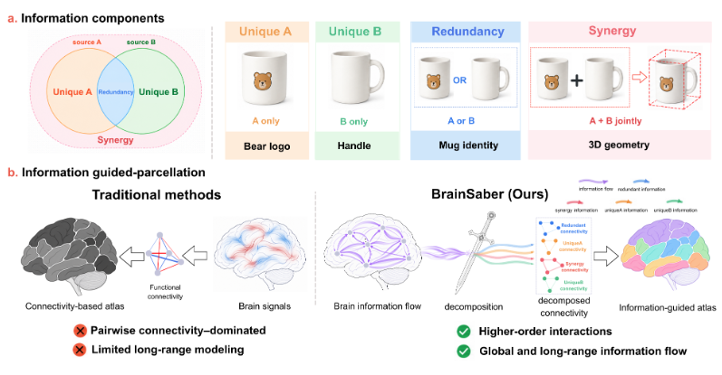
 : Reconstruction-Based Information Decomposition for Functional Brain Atlas Construction
: Reconstruction-Based Information Decomposition for Functional Brain Atlas Construction
arXiv, 2026.

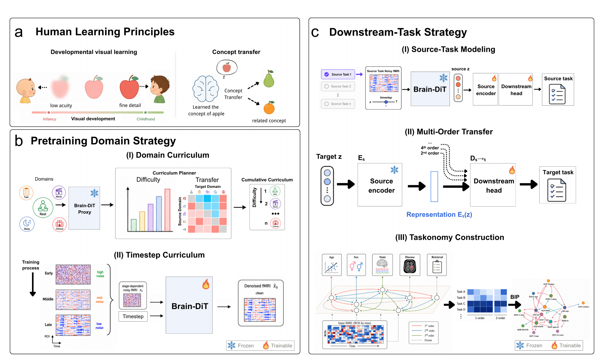
BrainTaskonomy: Learning How to Pretrain and What to Transfer in fMRI Foundation Models
arXiv:2609.10518, 2026.
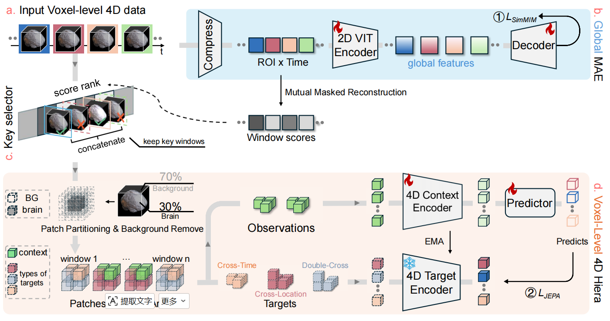
SLIM-Brain: A Data- and Training-Efficient Foundation Model for fMRI Data Analysis
arXiv:2512.21881, 2025. GitHub
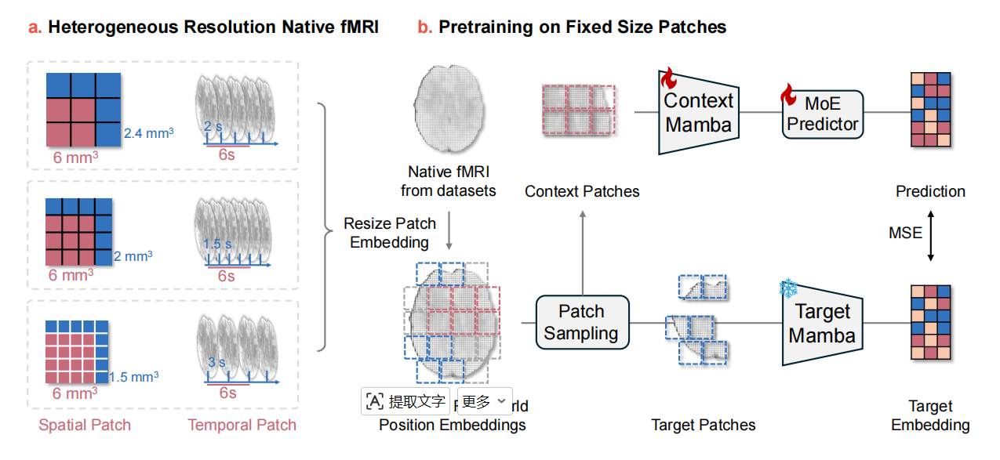
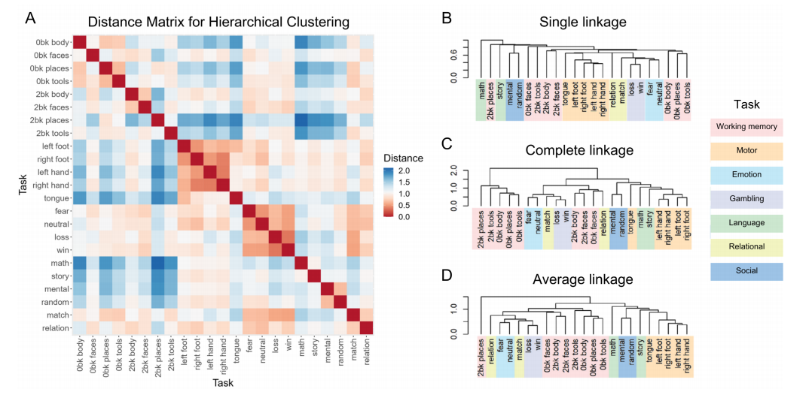
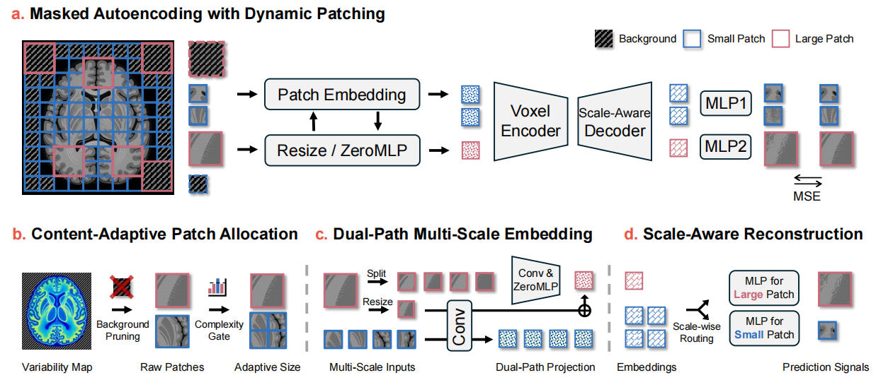
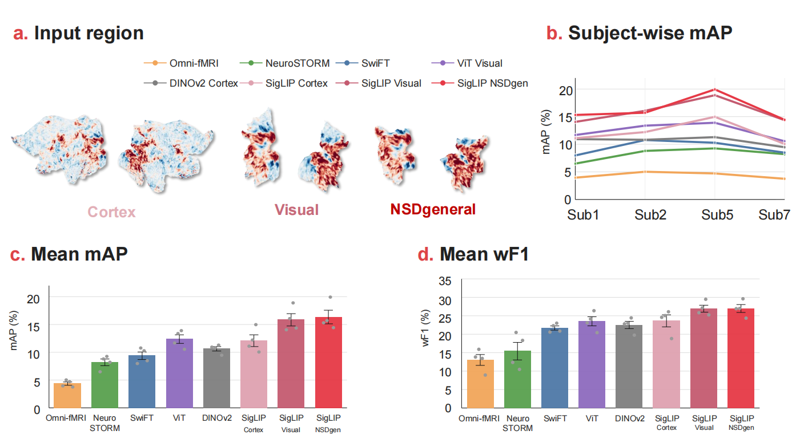
FlatClip: Reusing Image Foundation Models for fMRI Representation Learning via Cortical Flatmaps
NeurIPS, 2026 (Poster).GitHub
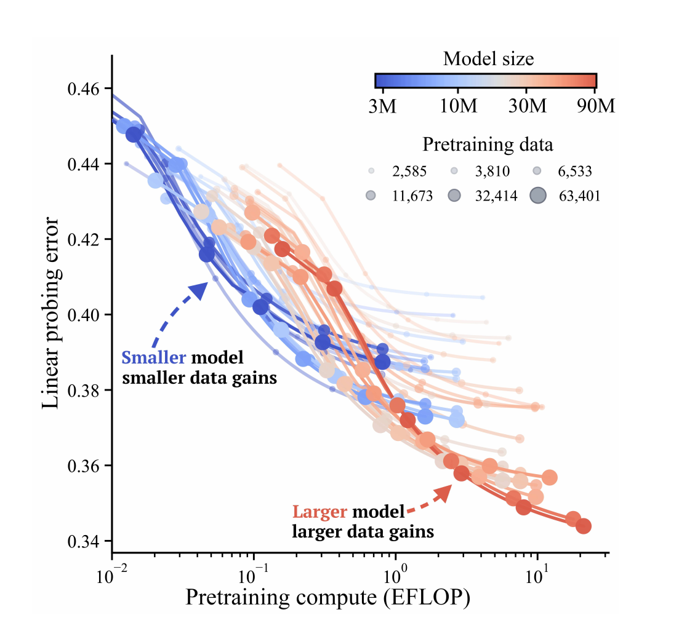
A Scaling Study for fMRI Foundation Models
arXiv:2609.27232, 2026.GitHub
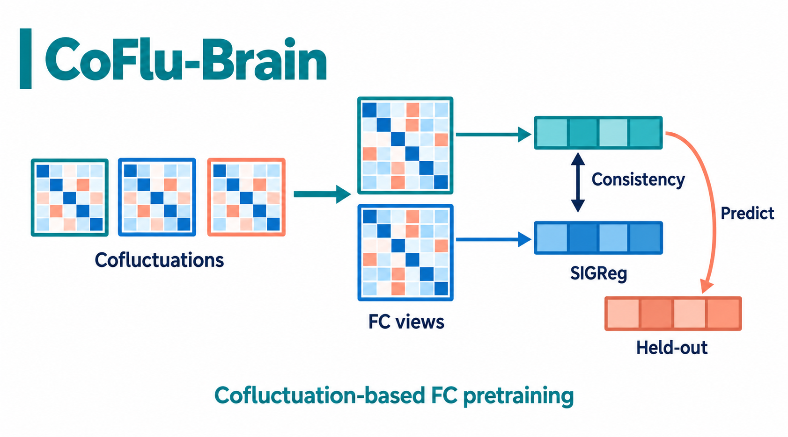
CoFlu-Brain: An fMRI Connectivity Foundation Model with Cofluctuation-Based Pretraining
arXiv:2610.15450, 2026.
* denotes equal contribution.
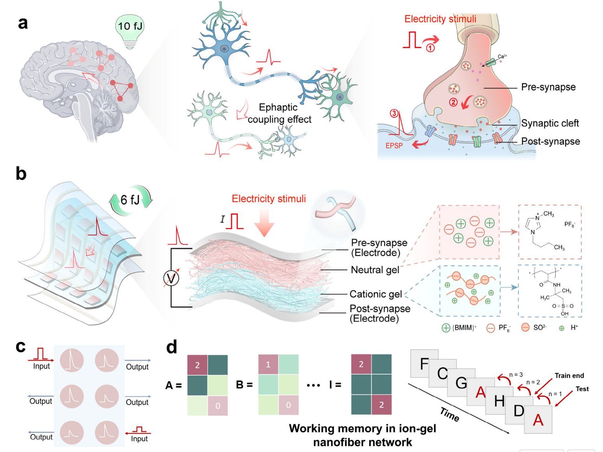
Advanced Materials, 37(16), 2419013, 2025.
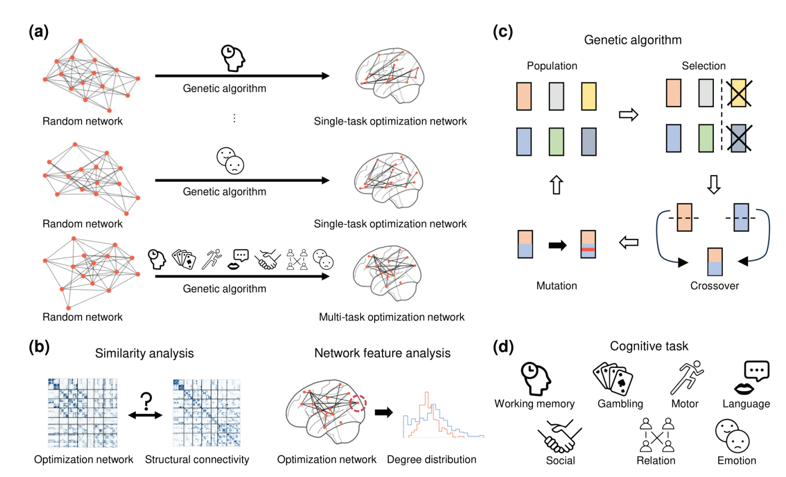
A Genetic Algorithms for Optimizing Structural Brain Network Across Cognitive Tasks
China Automation Congress, 5210-5215, 2024.
* denotes equal contribution.
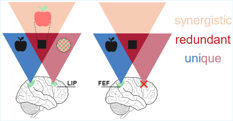
Uncovering information hubs in human brain dynamics through prediction-based decomposition
Manuscript in preparation.